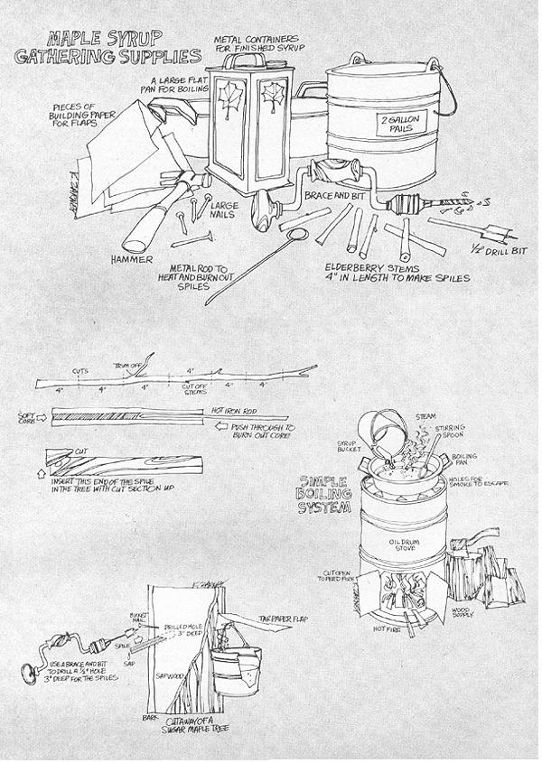
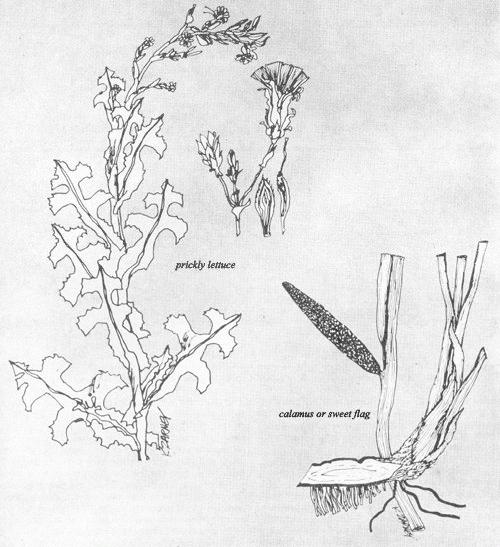

March, in Wisconsin,can be a beauty or a beast. It can be a time for picking tender greens from the sunny side of field knolls or it can be a time for spending the best part of the day shoveling through deep snow. One thing is practically certain, however . . . March is the time for sap to run in the maple trees.
The equipment required for turning this sap into maple syrup - good eatin' anytime - is very simple. All we really need is a brace and bit, a few elderberry stems, a whittling or paring knife, some lightweight pails and a few nails.
Our bit should drill a hole about 1/2-inch in diameter and the pails should each hold at least two gallons. Nails 10 d or larger will suffice for hanging the buckets on the maple trees and the elderberry stems (for spiles) should be green wood and not so much larger than the bit that they can't be quickly shaved to fit the holes we drill. We'll need a fire for boiling off the sap, of course, and I use the barrel stove in my garage for this purpose.
There's a little trick to making sap spiles out of elderberry stems and, although I covered the technique in MOTHER N0. 11, I'll outline it again here.
First, find a patch of elderberries (Sambucus Canadensis) -maybe the same patch you harvested berries or blossoms from last year-and saw off enough stems (1/2 inch or larger in diameter) to allow four inches of length for each spile. Trim off the branches, saw the stems into four inch lengths and force the white center out of each piece. This center is a soft pithy material and it can be pushed out with the right sized rod. It can also be burned out.
Use a wire about the same size as a coat hanger and heated red-hot to burn the soft core from a spile by picking up the four-inch length of stem and inserting the hot wire-gingerly-into one end. Smoke will rise and you'll feel little resistance as you push the wire completely through the spile. If it pushes hard, remove the wire, re-heat it and try again.
Burn out the centers of all the sections of elderberry stem this way. Then take your pocket knife and, near the end of the spile that will be inserted in the tree, shave away a flat surface-at an angle-until the center hole is visible. The spile will be inserted flat-surface-side-up and will help to guide the sap into the bucket. If you don't have any elderberries in your area, use metal tubing. I'm told that bush dwellers in some areas make a tube of rolled-up birch bark and cut the holes in the trees with a knife.
At any rate, when I have the necessary equipment together to start tapping, I go out into the woods to a stand of six large maples that I know. Each tree stands about one foot in diameter-large enough to be tapped twice, with one spile on each side of the trunk-and yields from 15 to 30 gallons of sap in a good year.
To do the actual tapping I drill a hole into the tree about chest high. The hole should be deep enough to go through the bark and into the sap wood-about three inches total-and should be drilled slanting slightly upward so that the sap will run down and out.
The next step is to insert the spile-which may have to be trimmed to fit-into the hole. The fit must be tight to be effective.
Now, you can notch the spile and hang your bucket directly on it but I've found that this method is subject to accidents . . . so I drive a nail above the spile and through one corner of a piece of building paper. I then hang the bucket from the nail and the building paper forms a roof over the pail so that rainwater, pieces of bark and other foreign matter-which greatly reduce the quality of the sap-can't get into the container. Sap is only 3% sugar anyway, and if you dilute that with rainwater you have a lot of work ahead of you just getting the sap boiled down. Foreign matter in the syrup will sometimes give it an off flavor, too.
Maple syrup producers in Wisconsin now almost exclusively use heavy plastic bags for collecting sap. These bags are sealed around the spite in the trunk for the same reason that I put the building paper roof over my buckets. A food forager could likewise use a plastic bag if he had one and if he didn't have any prejudices against that material. My philosophy regarding plastic, though, is that I'll use it if I'm recycling it. I like to think this is turning the enemy back on himself. I won't, however, become dependent on it.
I dump my sap buckets twice a day and try to boil down the sap every day. This boiling down is best done in a large flat pan, can be a very lengthy process and is complete only when the sap is thick and sweet enough to please your palate.
If you want your syrup to be of the same consistency as is generally sold, you'll have to boil it until the temperature rises to seven degrees above the initial boiling point of the liquid. This, of course, will vary somewhat, depending on your elevation above sea level. Here, water boils at 209°F. Therefore, syrup is made at 216°F.
When boiling down maple syrup be very careful not to get it too hot and scorch it or it'll be kinda' strong-flavored.
Scorching is especially a problem during the final few minutes of the change from syrup into sugar.
If you continue to boil your sap after it has reached the syrup stage, it will eventually granulate into soft sugar. You'll know when that happens because a little sap taken from the kettle and cooled will crunch between the teeth. When it hits this stage, I remove the sap and stir it constantly until it's cool. This results in a creamy soft sugar that can be spread like butter or spooned onto breakfast cereal.
Hard sugar is made by further cooking the syrup to the sugaring stage . . . which is generally designated as 234°F. When you have your sap heated to this temperature, pour it into molds to cool. The sugar will harden into the shape of the mold and can thus be formed into animals, plants or other objects which find a ready market (especially during the holiday season).
Once made, both maple syrup and sugar can be used for many delicious recipes and either one should be more healthful and less harmful to the body than white sugar. I've read that some of the missionaries and early settlers sustained themselves very well on a diet of just maple syrup and corn meal. There are also accounts of Indians living on maple sugar for days at a time and other reports of how Indian families in this part of the country made large quantities of sugar and-since they used no salt at all-sprinkled it on their meat. This was probably more healthful than our current inclination to salt everything.
I use maple syrup to cover wheat cakes in the morning, put it on my whole wheat bread and-whenever I have it-substitute it for white sugar. It also makes a mighty good syrup for canning fruit. No one has really appreciated maple syrup or maple sugar, however, until they've poured or sprinkled it over wild rice on a cold winter morning with the snow piled deep around the cabin and the wood stove radiating a gentle heat.
Get your chops into this delicious little treat by sprinkling a cup of wild rice into three cups of lightly salted boiling water and boiling for 45 minutes or until the rice is tender . . . then serve it with milk, maple syrup or maple sugar. (I covered wild rice gathering and processing in MOTHER NO. 6).
Keep in mind that it isn't absolutely necessary to tap sugar maples to make sweet syrup. Gibbons tells about tapping all the varieties of maple-even the sycamore-and Angier says that the Bushmen along the Peace River tapped birch trees for the syrup they made.
If I lived where there were no sugar maples I would certainly experiment with whatever large deciduous trees were in my area. You should also be aware that there are trees that can be tapped for syrup in the Mid-South too . . . it's not exclusively a product of the North.
I personally think the art of sugar-making could be expanded to a much greater degree than it is . . . especially in back country areas.
Folks who do live in a sugar maple region shouldn't overlook the possibility that they can make some extra "bread" from the trees on their homestead. A good-sized maple may yield a gallon of finished syrup which will find a ready market at a price of $15. Concentrated further into sugar, the products of the maple tree are also readily saleable and are very easy to both store and transport to distant markets.
Maple syrup cooperatives, each of which is really a central evaporating station for boiling down the syrup, are operating in some areas. Producers tap the trees, put their sap in special containers and bring it to the evaporators. The sap is purchased there after being tested for sugar content and the producer gets paid everytime he brings in a load. Since money can be scarce on a homestead this time of year, many back-to-the-land people should welcome such an arrangement.
By the way, there's a good book for any of you folks who do want to learn the maple syrup business. It's Helen and Scott Nearing's, THE MAPLE SUGAR STORY, which I'm glad to see listed on MOTHER'S BOOKSHELF. This is the book, back in '58 or '59, that started me thinking of a way out of the system.
Just about the time that maple sugaring winds down for the season, many green plants will start to send their succulent stems up through the ground . . . which is very handy for the food forager who's probably getting a little tired of winter meat and sprouts. One of the best of these plants is prickly lettuce ( Lactuca Scariola ).
Some botanists say that domestic lettuce was derived from the prickly lettuce . . . and well it might have been since "tame" lettuce resembles wild lettuce in about the same way a domestic fruit resembles its wild counterpart. Our domestic lettuce is a pale, mild, insipid character which can't stand competition and must be tended with great care. Prickly lettuce on the other hand, is often seen elbowing its way up through strong weeds such as burdock and thistles. It isn't discouraged by trees either, and I've seen it growing many times in rich woods . . . especially under oaks and hickories.
Prickly lettuce shoots appear in our area early in April. The slightly yellowish leaves look and taste like tame lettuce when very small but later, as the plant matures, it grows from a leaf-clasped stalk to a height of three or more feet.
In its early stage prickly lettuce looks like a thistle, especially since its yellow flowers resemble the blossoms of some Canadian thistles. Close inspection of the plants will dispel any confusion, however, because the Canadian thistle has sharp stabbing thorns while the thorns of wild lettuce are only a mild rasp.
Prickly lettuce can be used in many different ways : . . in mixed salad, with toasted soybeans and with fish, to name just a few.
Mixed salad is prepared by picking two packed cups of lettuce leaves, about one cup of dandelion crowns and a cup of watercress. . . if you can find that much. After the ingredients are gathered, wash them thoroughly and crisp them in cold water or in the refrigerator. When they're good and crisp, place all the ingredients in a large bowl and toss with your favorite salad dressing.
Dandelion crowns, by the way, are the white leaf base found at or below the surface of the ground. They're harvested by cutting out and saving the section of the plant below the leaves and above the roots as I mentioned in MOTHER NO. 3.
Watercress, the well-known plant from the supermarket, can also be found growing in most cool, fast-flowing streams. Harvest watercress by scissoring it off at the top of its very loosely rooted roots. Pulling it up kills the plant. See MOTHER N0. 8 for more information on watercress and, for the present, let's get back to wild lettuce.
Wilted lettuce and soybeans makes a good main dish, especially in the springtime. Grind some soybeans, which have been soaked overnight and toasted in the oven, into coarse flour. Heat some bacon grease in a fry pan to the frying stage and drop washed lettuce leaves in, a few at a time. Stir the leaves to coat them with bacon grease. As they wilt down, add more greens until the pan is full or until you have enough to satisfy your appetite. Continue stirring until all the leaves are well coated and, just before removing from the fire, sprinkle ground soybeans over the wilted greens. Stir slightly, then remove and eat the combination while it's hot.
Something else which is very good and which probably closely resembles a Chinese dish, is prickly lettuce and fish. During March and April a number of fish make their spawning runs up small streams. One of these fish, found in many areas mostly unprotected by regulations, is the sucker. I spear and trap all the suckers I can get for smoked, canned and fried fish and I also use some for greens and fish. Now suckers, classified as rough fish, have one disadvantage.. . they're very boney. Since I don't like fish bones when I eat my greens and fish,
I use an old trick to separate out the good meat. This separating takes a little time but it's worth it.
I first skin and clean a large sucker and place it in a lightly salted pan of water. Next, I put the pan on the fire and boil the sucker for a few minutes until the meat will flake off the bones. I remove the fish then, let it cool and separate the meat from the skeleton with a fork. It takes close inspection to get rid of all the bones but the delicious taste makes it worthwhile.
When I have a cupful of the meat cleaned, I steam a colander full of washed wild lettuce greens over a kettle of water for a few minutes. When the leaves begin to wilt I mix the fish into the greens, cover the whole thing and let it steam for about 15 minutes more. I remove the dish from the fire at that point, possibly add a little soy sauce and enjoy its tasty goodness while it's hot. Then I sometimes top this meal off with a little piece of calamus candy.
Calamus, or sweet flag, is a tall leafy plant that vaguely resembles cattail except for leaves that are much narrower with a more yellowish-green color . . . a marsh full of calamus is about the same shade of green as a marsh full of cattails that are starting to dry up.
The flowers and seeds of the calamus are borne on a spadix that projects from the side of the leaf and, strangely enough, the plant can reproduce either from the roots or from the seeds . . . possibly because the seeds are produced only by plants that grow in water all year 'round. Calamus does grow well in seasonal marshes too (where it reproduces by extension of the roots) and folks who have a damp place on their homestead could plant a few of those roots there and soon have a plentiful supply of a very useful plant.
Sweet flag roots can be dug from their shallow hiding places beneath the surface of a marsh. I then wash mine very well, cut them into inch-long pieces and dry them in the attic for about a week. When the roots are dry, I place them in a quart jar until I'm ready to use them.
Calamus root is used for calamus candy and it's a tasty and healthful morsel worthy of almost anyone's attention. Here's my recipe:
Dig, wash and peel a good handful of young calamus root. Cut them into pieces about one inch long, the same as for the dried roots (which are just as good to use as the freshly picked ones . . . sweet flag retains its sturdy flavor for quite some time). Oh yes, it is best to use only the young root stalks of the calamus as the older, yellowish ones are too tough and strong-tasting to be really good.
Place the roots in a pressure cooker set at 15 pounds and cook them for about one hour. Then cool the pressure cooker, remove the top and drain the water. The roots should be tender at that point but they may be a little too strong-flavored to suit your taste. If so, add fresh water and boil them for five minutes. Drain and repeat the procedure if necessary. Three changes of water should tame almost any young root.
Don't discard the water you drained from the calamus. Instead, place it in a clean jar and cover it to keep as calamus tea. This tea is used for upset or sour stomach and is usually taken cold with a dash of honey. I can personally vouch for its capacity for taming flatulence of the stomach caused by soybeans. As much as I like that particular dish, I'm glad to have my supply of calamus root handy when I eat
it. At any rate, once the young sweet flag roots have been cooked until they're tender, I drop them in a sauce pan. I next cover the calamus with maple syrup and let the roots simmer for an hour (twice as long won't hurt a thing). When the mixture has cooled, I enjoy the sweets heartily for days . . . or until the candy is gone. I'll admit that this calamus candy does take a little getting used to, but it never leaves that sour aftertaste in the mouth that comes from eating chocolates.
Candy and tea are not the only products that can be made from calamus. Along about April when the emerging sweet flag plant is just a short stalk, you may also want to try it as a dish of mighty tasty greens. Pick a good quantity of the stalks, peel away the bitter rind and steam them. Serve them with vinegar and oil or with a little soy sauce.
Now it just happens that early spring finds another plant (which will complement the sweet flag to form a fresh salad) growing into its most edible stage . . . and that plant is sheep sorrel (see MOTHER NO. 9). It's a low-growing plant with arrow-shaped leaves and is usually found in sour soil. The tangy vinegar-like taste of sheep sorrel together with the rather insipid tasting leaves of the calamus combine to make a scrumptious fresh salad.
Pick and chop at least two cupfuls of new sweet flag shoots. Further pick and chop at least two cups of sheep sorrel. Toss both plants into a large bowl with a little bacon grease and two slices of bacon which have been crisply fried and then crumbled. That's delicious enough to close on!
|
 |
 |
|